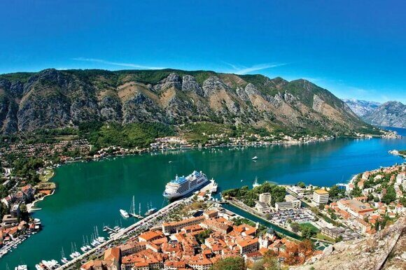

« НазадВъезд в Черногорию 2025: Подробное руководство для туристов Черногория – жемчужина Адриатического побережья, привлекающая туристов своими живописными пейзажами, чистыми пляжами, богатой историей и гостеприимством местных жителей. В 2025 году, как и ранее, Черногория остается популярным туристическим направлением для граждан России. Однако, планируя поездку, важно разобраться в нюансах оформления документов, визовых требованиях и других организационных моментах, чтобы избежать неприятных сюрпризов. Эта статья предоставит исчерпывающую информацию о том, как легко и без проблем попасть в Черногорию в 2025 году, подробно рассматривая все аспекты подготовки к путешествию. Какой загранпаспорт лучше оформить для путешествия в ЧерногориюПри планировании путешествия в Черногорию одним из важных вопросов является выбор заграничного паспорта. Для граждан России, желающих посетить эту красивую страну, наличие заграничного паспорта является обязательным условием для въезда. Хотя Черногория не выдвигает строгих требований к типу паспорта, эксперты рекомендуют оформлять биометрический паспорт, и вот почему. Во-первых, биометрический паспорт отличается высокой степенью защиты от подделок. Он содержит встроенный электронный чип, который хранит биометрические данные владельца, такие как отпечатки пальцев и фотография. Это значительно повышает уровень безопасности документа и снижает вероятность его подделки, что особенно актуально в условиях современного мира, где случаи мошенничества становятся всё более распространёнными. Во-вторых, наличие биометрического паспорта позволяет существенно ускорить процесс прохождения пограничного контроля. На многих международных аэропортах и пограничных пунктах биометрические паспорта обрабатываются в автоматическом режиме, что позволяет избежать длинных очередей и значительно сократить время ожидания. Это особенно важно для туристов, которые хотят максимально эффективно использовать своё время на отдыхе. Кроме того, биометрические паспорта имеют более длительный срок действия — обычно они действительны в течение 10 лет, в то время как старые образцы паспортов имеют срок действия всего 5 лет. Это означает, что, оформив биометрический паспорт, вы сможете путешествовать не беспокоясь о необходимости его замены в ближайшие годы. Хотя в Черногорию можно въехать и со старым образцом паспорта, использование биометрического паспорта сделает ваше путешествие более комфортным и менее стрессовым. Стоит также отметить, что биометрические паспорта могут быть полезны не только для поездок в Черногорию, но и для путешествий в другие страны. Многие государства, включая страны Шенгенской зоны, принимают биометрические паспорта и предлагают упрощенные условия для их владельцев. Это открывает перед вами больше возможностей для путешествий и делает процесс пересечения границ более удобным. Таким образом, если вы планируете поездку в Черногорию, оформление биометрического паспорта будет разумным и практичным решением. Он не только обеспечит вам безопасность, но и значительно упростит процесс прохождения границы, что сделает ваше путешествие более приятным и запоминающимся. Как оформить загранпаспортОформление заграничного паспорта — это важный процесс, который требует внимательности и соблюдения определённых шагов. Заграничный паспорт позволяет путешествовать за пределами России, и его оформление осуществляется через подразделения УВМ МВД России. Рассмотрим все этапы более подробно. 1. Сбор необходимых документовПервый шаг на пути к получению заграничного паспорта — это сбор всех необходимых документов. Список документов может варьироваться в зависимости от типа запрашиваемого паспорта (обычный или биометрический) и региона, где вы подаете заявление. В общем случае вам понадобятся:
2. Подача документовПосле того как все документы собраны, следует этап подачи. Документы можно подать несколькими способами:
3. Оплата госпошлиныОплата государственной пошлины — это важный этап. Размер пошлины зависит от типа паспорта и от того, насколько срочно вам его нужно получить. Например, для биометрического паспорта пошлина может быть выше, чем для обычного. Оплатить пошлину можно через банковские сервисы, что значительно упрощает процесс. 4. Получение паспортаПосле того как ваши документы будут обработаны, и информация будет проверена, вы сможете получить свой заграничный паспорт. Сроки изготовления могут варьироваться, но обычно они составляют от 1 до 3 месяцев. Важно помнить, что в пиковые сезоны, такие как летние месяцы, сроки могут увеличиваться из-за большого количества заявок. Вы можете отслеживать статус готовности паспорта онлайн на сайте Госуслуги. Рекомендации по оформлению заграничного паспорта
Оформление заграничного паспорта — это процесс, требующий внимательности и подготовки. Следуя всем рекомендациям и строго соблюдая все шаги, вы сможете успешно получить свой паспорт и отправиться в путешествие без лишних хлопот. Визовые требования для граждан России для въезда в ЧерногориюДля граждан России виза для краткосрочного туризма (до 30 дней) в Черногорию не требуется. Это относится к поездкам с туристической целью, для посещения родственников или друзей, а также для краткосрочного делового визита. Для более длительного пребывания или других целей (например, работа, учеба) виза необходима. Наличие безвизового режима не снимает ответственности за соблюдение всех правил въезда и пребывания в стране. Что может стать причиной отказа во въезде в ЧерногориюНесмотря на безвизовый режим, пограничная служба Черногории имеет право отказать во въезде по нескольким причинам:
Процедура въезда в ЧерногориюПроцедура въезда в Черногорию относительно проста. После прилета или прибытия на границу необходимо предъявить пограничнику заграничный паспорт и, при необходимости, другие документы, подтверждающие цель визита. Проверка документов обычно занимает несколько минут. Важно быть вежливым и готовым ответить на вопросы пограничников. Временная регистрация в Черногории для россиянВъехав в Черногорию, россияне обязаны зарегистрироваться в течение суток. Отели часто берут на себя регистрацию гостей. При аренде апартаментов или частного дома, регистрацию обычно нужно оформить самостоятельно в местной туристической организации или муниципалитете (општина). Там же оплачивается туристический сбор (0,1-1 € в день на взрослого, 50% для подростков 12-18 лет, дети до 12 лет и инвалиды освобождены). Сумма зависит от муниципалитета (например, 1 € в Будве и Улцине). Сохраните квитанцию об оплате – ее могут потребовать при выезде. Штраф за несвоевременную регистрацию – от 60 €. Платежные карты в Черногории: что работает, а что нетВ Черногории не принимаются российские карты платежных систем «Мир», Visa, Mastercard, American Express и JCB из-за санкций и отсутствия поддержки. Использование UnionPay также проблематично: официально она не работает в Черногории, и подтвержденных случаев успешного использования крайне мало. Туристам рекомендуется использовать банковские карты, выпущенные в других странах (например, Казахстане или Армении). Для снятия наличных с российских карт UnionPay часто приходится ехать в соседние страны, такие как Сербия. Как добраться из России в Черногорию: альтернативные маршрутыИз-за закрытого воздушного пространства между Россией и Черногорией, путешествие в Черногорию стало возможным только с пересадками. Наиболее популярные маршруты: Авиаперелет с пересадкой Авиаперелет до Белграда + автобус Таким образом, путешествие в Черногорию требует планирования и выбора оптимального маршрута, учитывающего как стоимость, так и время в пути. Возможные проблемы при поездке в ЧерногориюПри планировании поездки в Черногорию следует учитывать некоторые потенциальные проблемы:
Рекомендации и советы для поездки в Черногорию
ЗаключениеПопасть в Черногорию в 2025 году для граждан России относительно легко, благодаря безвизовому режиму для краткосрочных поездок. Однако, подготовка к поездке требует внимательного отношения к оформлению документов. Соблюдение всех рекомендаций и подготовка к возможным проблемам помогут вам провести незабываемый отдых в этой красивейшей стране. Не забывайте, что безопасность и комфорт вашего путешествия напрямую зависят от вашей подготовки и внимательности к деталям. Приятного путешествия! Срочное оформление загранпаспорта для поездки в ЧерногориюПланируете поездку в Черногорию и срочно нуждаетесь в заграничном паспорте? Паспортно-визовый центр «Север» готов помочь вам в этом вопросе! Мы предлагаем услуги по быстрому оформлению заграничных паспортов, чтобы вы могли без лишних хлопот отправиться в путешествие. Почему выбирают нас?
Как оформить заграничный паспорт?
Не откладывайте свои планы на потом! Свяжитесь с паспортно-визовым центром «Север» уже сегодня, и мы поможем вам осуществить вашу мечту о поездке в Черногорию. Ваш комфорт и спокойствие — наша главная задача!
|
Комментарии
Комментариев пока нет